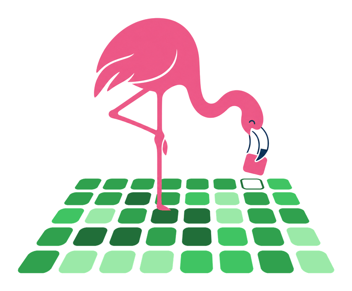

Agents open them faster than anyone can read them. Cribelo tells you what deserves your eyes.
curl -fsSL https://cribelo.github.io/install.sh | shThen run cribelo on the branch you want reviewed.

Cribelo ranks every file by complexity and by regression risk, measured on your own git history.
More complexity in a file that broke before, and no test?
Read it first.
Only docs changed?
Nothing to read.
34 files changed. Point at one to see why.
$ cribelocribelo · 34 files changed vs origin/main (merge-base b2f83dc)
Read 9 of 34 changed files, about 45 min.
Start with internal/analyzer/library_reach.go: +266 lines, new LibraryUses() complexity 17, +4 more, imported by 83 files.
Skip (25)
tests only 12 · ranked lower 9 · no measurable change 4 cribelo skip
Gate: passed (9 high, 7 medium, fail on never)
Weights: generic, not yet calibrated on this repository (run: cribelo calibrate)
Real output of cribelo on pull request #196 of AST Metrics, the one that added who-uses.
Same pull request, same answer, on every machine. And every file tells you why it made the list.
Complexity. Past bug fixes. Churn. Coupling. Duplication. Tests.
Real parsers and your git history. cribelo backtest replays your past changes, so you can check it against your own bugs.
Every pull request gets one comment, updated on each push. See a real one.
Save it in .github/workflows/. Want a time limit? Add with: { budget: 30m }.
on: pull_request
permissions:
contents: read
pull-requests: write
jobs:
cribelo:
runs-on: ubuntu-latest
steps:
- uses: actions/checkout@v4
with: { fetch-depth: 0 }
- uses: cribelo/cribelo@v1
It won't find your bugs. It tells you where to look.
curl -fsSL https://cribelo.github.io/install.sh | shThen run cribelo on the branch you want reviewed.